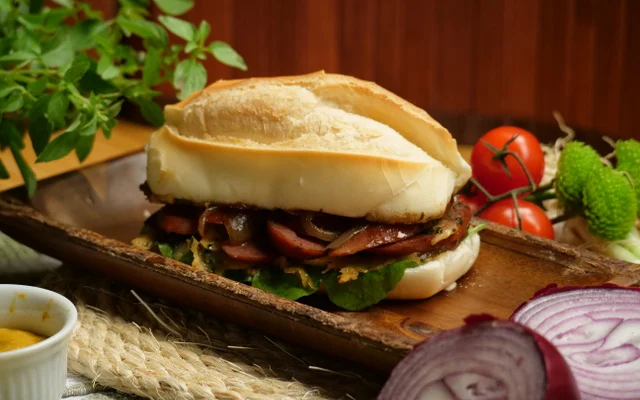

Home |
Receita 1 |
Receita 2 |
Receita 3 |
Terceira Receita
Esta página é a descrição completa da receita.
Sanduíche de linguiça calabresa

Sanduíche no pão macio, com recheio suculento de linguiça calabresa, queijo derretido e vegetais frescos — uma
opção simples, saborosa e bem apresentada.
Ingredientes (4 porções)
- 2 linguiças calabresa
- 1 cebola média
- 1 colher de óleo
- 2 colheres de sopa de sasinha picada
- 4 pães tipo francês
- 6 fatias de queijo prato
- 2 colheres molho de soja (shoyu)
- Sal e pimenta-do-reino
Modo de preparo
Modo de preparo: 20min
- Corte a linguiça em fatias finas e na transversal.
- Corte a cebola em anéis.
- Coloque a frigideira para aquecer.
- Desepeje o óleo e em seguida a linguiça
- Mexa com uma colher até ficar bem corada.
- Junte a cebola e o molho de soja, a pimenta-do-reino e a salsinha.
- Tampe e deixe até a cebola ficar cozida.
- Na própria frigideira monte 4 porções e cubra com queijo prato.
- Cubra novamente a frigideira para que derreta o queijo.
- Corte o pão ao meio, deixe a parte de baixo em um prato.
- Coloque a parte superior sobre as porções na frigideira.
- Com um espátula, retire cada porção.
- Coloque sobre a outra parte do pão no prato.
- Corte ao meio, decore com ma folha de alface e tomate.